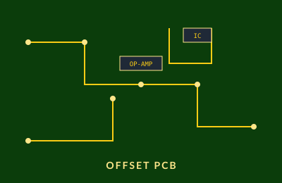

Overview
The Offset PCB is an op-amp-based voltage detection circuit built to monitor signal integrity at critical nodes in our Formula SAE EV's electrical system. The board lets the team know — in real time — whether a wire is disconnected, shorted, or otherwise misbehaving, before a fault propagates into more sensitive electronics.
Design Process
- Modeled the op-amp comparator network in LTspice to validate the offset threshold before committing to a layout.
- Identified op-amp output voltage errors during simulation, traced them to bias resistor selection, and tuned the network until results matched expected ranges.
- Implemented fault-detection logic so an end user can tell at a glance whether a monitored wire is connected, disconnected, or has failed.
- Routed the board in KiCAD, optimizing for clear signal paths and easy probing during validation.
Outcome
The board now sits in the powertrain's fault-monitoring chain and gives the team a fast, debuggable interface for catching wiring issues in a vehicle whose harness has hundreds of nodes.
What I Learned
Closing the loop between simulation and hardware: spending the extra hour in LTspice consistently saves a full day of bench debugging later. I also got more comfortable reading op-amp datasheets critically rather than just trusting nominal numbers.
← Back to projects